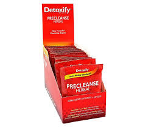

Detox / Cleanses
• DETOXIFY PRE CLEANSE CAPS
- You can enjoy a healthier, cleaner body with Detoxify PreCleanse. You get all of the benefit of nature’s most powerful cleansing herbs with Detoxify PreCleanse. The perfect start to your cleansing program.
PRODUCT INFO
- Precleanse Herbal Blend contains potent herbs historically known for their powerful cleansing qualities, which boosts the body’s natural detoxification process. These herbs include Dandelion, which is used to support healthy liver and gallbladder function; Milk Thistle, which helps restore healthy liver function and minimize toxin damage; Juniper, which is known to have synergistic effects that encourage healthy bladder and kidney conditions; and Uva Ursi, which is historically used to promote kidney and urinary health.
- If you have time for pre-cleansing, the product is intended to be used in conjunction with Detoxify’s intensive cleansers such as Ready Clean and Xxtra Clean.
Detoxify products are dietary supplements. Statements made about these products have not been evaluated by the Food and Drug Administration. This product is not intended to diagnose, treat, cure, or prevent any disease
RETURN & REFUND POLICY
All Sales are FINAL !
SHIPPING INFO
I'm a shipping policy. I'm a great place to add more information about your shipping methods, packaging and cost. Providing straightforward information about your shipping policy is a great way to build trust and reassure your customers that they can buy from you with confidence.